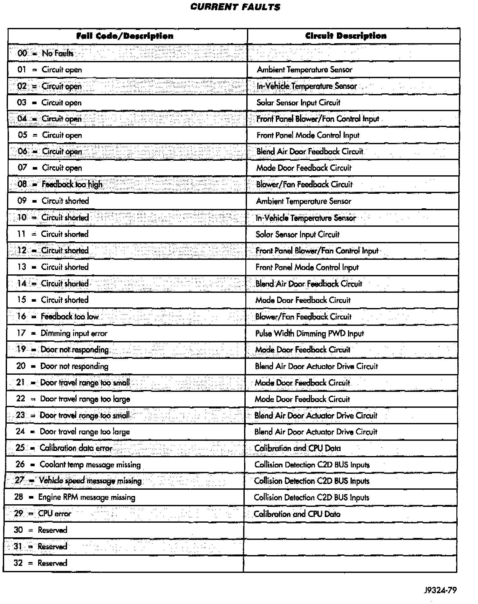
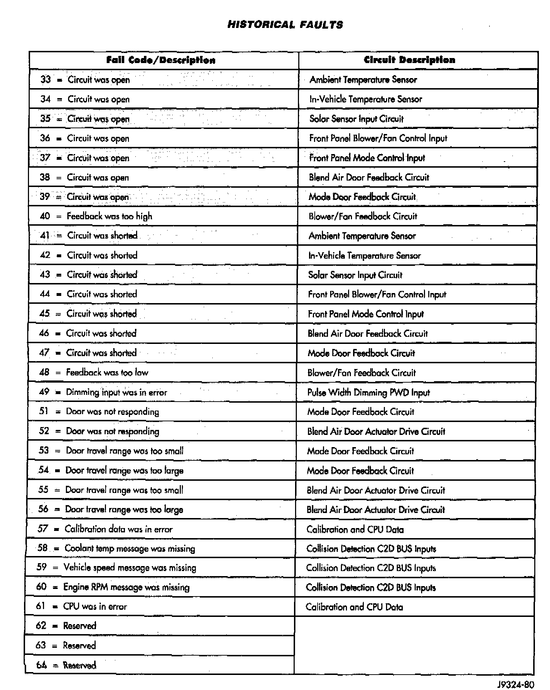

How to Enter Diagnostics Using Scan Tool
Current Fault Codes And Circuit Descriptions:

Historical Fault Codes And Circuit Descriptions:

Chrysler's Diagnostic Readout Box (DRB) displays the trouble code names (not the numbers). A generic scan tool may display the trouble code number (not the names). Use the charts above to cross reference between the names & the numbers when looking up diagnostic charts for trouble codes.